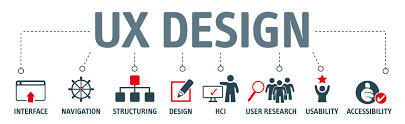
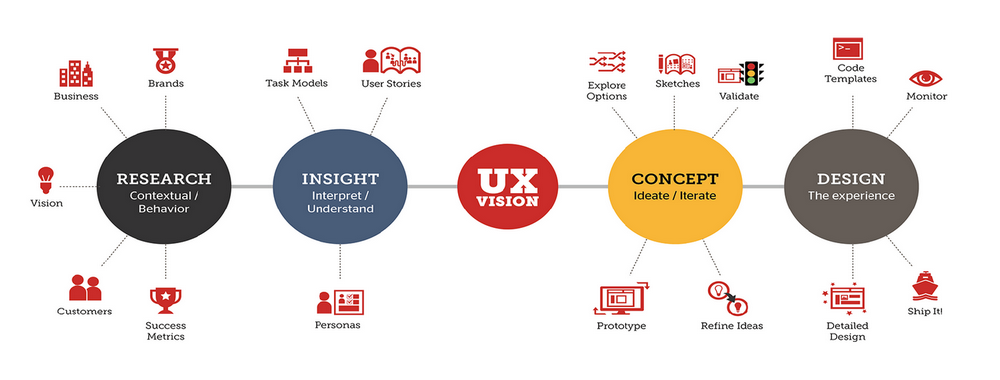

Intro

Kära läsare,
Jag är en kreativ ingenjör med kompetens och kompetens inom både forsknings- och utvecklingsområdet som verkligen trivs när det händer mycket samtidigt. Om ditt företag växer väldigt snabbt, speciellt inom mina intresseområden, produktdesign och tjänster. Då skulle jag väldigt gärna vilja bidra till företagets framtida utveckling och vara en del av olika team.
Målet med min utbildning vid Uppsala universitet har varit att kunna arbeta med användarupplevelse, beteende och design av produkter och tjänster. Jag söker tjänster med rätt kombination av teknik och innovationsarbete.
Jag skulle verkligen vilja arbeta med team för utveckling som bidrar till människors välbefinnande och hälsa. Jag tror på hårt arbete och uthållighet leder till fantastiska saker. Jag tror att man kan få erfarenhet från vilket jobb som helst och använda det inom olika domäner. Jag tvekar inte att arbeta för vilket företag som helst på vilken nivå som helst, jag tycker att det är intressant och jag trivs verkligen med det. Som person är jag välkomnande, något som jag visat genom fritidsaktiviteter som att ansvara för mottagandet av nya studenter och genom olika jobb inom utbildningsbranschen. Jag är också en kreativ person som gillar att arbeta med olika uppdrag. Att knyta an till människor och upprätthålla kontakter är också något som jag tycker är stimulerande. Jag har alltid dragits till folkorienterade jobb.
På fritiden spelar jag gitarr eller cyklar till utkanten av staden. Jag försöker vara utomhus i naturen så ofta som möjligt och jag älskar discgolf och bouldering. Jag gillar också att spela brädspel och gå på afterwork med kollegor.
Jag ser fram emot att träffa dig för en intervju.
Med vänliga hälsningar,Sameer
Erfarenhet

Ser fram emot att arbeta med användarupplevelse och innovation.
Efter att ha tillbringat 8+ år som konsult inom programmering och innovativa koncept.
Arbetserfarenhet
Var med och grundade startupen UXNOW, Uppsala | Sept 2021 – nu
• Leda företag till utveckling och ta initiativ för att nå projekt som arbetar med användarupplevelser med hjälp av metoder som nämns i kompetensavsnittet. Etablera nätverk och marknadsnärvaro i Sverige. Designa produkt eller tjänster i samband med deras konsultverksamhet KPI:er.
• Forma produktens färdplan och strategi genom att utföra generativ och taktisk forskning för att förstå otillfredsställda användarbehov bakom affärsbehov.
• Skapa nya ramverk och repeterbara processer för att maximera den totala verksamheten.
Konsult (Indien, USA och Sverige)
Frilansande användaranvändare, innovatör och utvecklare | februari 2013 – september 2021
• Leda affärsutveckling och ta initiativ för att förbättra designen av användarupplevelsen med hjälp av metoder som nämns i kompetensavsnittet. Upprätta mätvärden för kvalitet, operationalisera dem och skapa instrumentpaneler som design- och produktteamen kan spåra i samband med deras affärs-KPI:er.
• Forma produktens färdplan och strategi genom att utföra generativ och taktisk forskning för att förstå otillfredsställda användarbehov bakom affärsbehov.
• Skapa nya ramverk och repeterbara processer för att samla in och analysera användardata.
Globalen Fair trade, Uppsala
UX- och UI-konsult | augusti 2021 – nu
• Löste komplexa interaktionsfrågor genom att förstå användarbehoven som ligger bakom affärskraven.
• Omdesign av digitala tjänster för att förbättra användningen och engagemanget med över 40 %.
• Använde Figma och Agile Development för att bygga interaktiva tjänster. Programmering med HTML, CSS och JS.
Arbetsförmedlingen (Stockholm, Sverige) (NDA)
UX- och UI-konsult (tredje part) | Sept 2021 - Sept 2021
• Utvärdering av webbplatsen baserad på WCAG 2.1/2.2.
• Föreslagna ändringar för att öka användarupplevelsen med 60 % baserat på WCAG 2.1/2.2-principerna.
SAAB AB (Linköping, Sverige)
Projekt för design av användargränssnitt | Sept 2019 - Nov 2019
Pen-Paper Prototyping, LO-FI Conceptual Design for Mission Trainer.
Deltidskonsultationsprojekt tillsammans med studier.
Utvärdering av interaktiva verktyg för skolor, Texas, USA. (NDA)
• Att leda ett team på 5 för att utvärdera och förbättra interaktiva verktyg
Utvärdering och förbättring av kiosker. (NDA)
• Mentor för ett team på 3 för att utvärdera och förbättra kiosker.
Designa och prototyper användarcentrerade system för en betaltjänst. (NDA)
Prototyper av digitala tjänster för sjukhus.
• Designa dataarkitektur och enheter tillsammans med installation som en del av praktik under chefen.
• Identifiering av brister i tillgänglighet för personer med olika funktionsförmåga.
• Kontextuell undersökning på sjukhus som en del av praktik.
• Installation av enheter och tjänster för att förbättra effektiviteten med 45 %.
Webbtjänster Utvärdering baserad på WCAG 2.1/2.2 för små företag. (NDA)
• A/B-testning, interaktionsdesign och visuell design.
Design och prototyp för att stödja digitala tjänster för djurskydd.
• Paper-Pen Prototyping och mobilt gränssnitt på Figma. Utvärdera slutprodukten. (NDA)
Affärsutveckling och konceptuell design för en restaurang för att skapa ett digitalt utrymme.
Västgöta Nation (Uppsala, Sverige)
Ämbetsverkare och Klubbverkare | 20 september 2018 – 18 december 2020
• Lagspelare och ansvarig för aktiviteter för studenter i Uppsala, Sverige. • Introducera nya sätt att arbeta och hålla arbetsplatsen rolig för alla.
• Välkommen nya människor till organisationen som är rik på kultur och arv sedan 1639.
• Tillämpad PDCA-metod för kontinuerlig förbättring och leverans.
Aptech Limited (Mumbai, Indien)
Operations Executive (heltid) | 5 oktober 2015 – 6 april 2016
• Utvecklade statistiska modeller för att upptäcka mönster i data som hjälpte till att förstå användarsegment och tjäna kunden bättre. Tillhandahöll nyckeldatainsikter om produktanvändningsanalyser, konvertering och retentionstrender. • Ledde workshops för att designa och dokumentera tekniska lösningar som var anpassade till kundens affärsmål.
• Ansvarig för den övergripande processen, schemat för projekten och för att skapa detaljerade handlingsplaner för att ge bättre service.
• Konstant interaktion med intressenter för att hålla kontrollen över projektet. • Arbetade direkt med CTO och CPM för att leverera högsta vinster.
Avancerade kol- och roterande komponenter (Mumbai, Indien)
Chef – IT Ops Design (heltid) | 1 juni 2013 – 4 juni 2014
• Ledde arbetet med att utveckla ett användarvänligt användargränssnitt för företaget, även förbättrat UX genom intuitiva flöden och lämplig feedback.
• I ett försök att bygga momentum bakom införandet av a/b-testning, drev en rytm av hypotesgenerering för viktiga designbeslut och säkerställde att relevanta mätvärden utvärderades efter releaser. • Förbättrad effektivitet i utlåningsverksamheten, eliminerad resursöverlappning och minskade kostnader med över 10 % per kvartal för säljteamet.
• Assisterade vid prognoser, resursplanering, identifiering och schemaläggning av utbildningssessioner.
Vill arbeta för innovation
Fokusera på tillgänglighet, interaktionsdesign, webbanvändbarhet, beteendemönster, kundresor, visuell design, internationella och unga användare.
Genom att förstå designmönster, designprocess, personas, informationsarkitektur.
Med metoder som Agile, Analytics & Metrics, Heuristic Evaluation, Persuasive Design, Prototyping.
För att ge bättre resultat på applikationsdesign, B2B-webbplatser, varumärke, innehållsstrategi, e-handel, användartestning.
Andra intressen inom området E-post, mobil & surfplatta, sökning och navigering, sociala medier, eyetracking, UX-humor, UX-team
Kompetens

Saker jag kan göra
- Analysera
- Design
- Fånga buggar
- Administrera datamängder
- Expertutvärderingar av användare
- Lead Teams and Collaborative Works
- Gör kunder och kollegor glada
Metod
Interviews, Personas, Storyboarding, Journey Maps, Survey Design, Experiment Design, Usability Testing, Rapid Prototyping, Qualitative Analysis, Business Analysis, Quantitative Analysis, Design Strategy, Data Visualization.
Verktyg
• Unity3D, JIRA, Slack, Zeplin, Adobe Creative Suite, Sketch, Figma, Invision, Balsamiq.
• Google Analytics, Tableau, PowerBI, QlikView, A-CAD.
Kodning
• HTML, CSS, JS.
• C, C++, Java.
• SQL, NoSQL, Git
• Språk - Modersmål(engelska, hindi, marathi), Lagom Svenska
• Jag Följ Web Content Accessibility Guidelines(WCAG) 2.2
• Anpassningsbar, kritisk tänkare, dedikerad, pålitlig, designer, flexibel, ärlig, visonär, innovativ och smart arbetskraft.
du kan kolla in min personlighet och logik profilutvärdering från ALVA LABS AB, Sverige
Certifiering
Begrepp som lärt sig under magisterprogrammet -
Masteruppsats, Människa-datorinteraktion, Metoder för användbarhetsutvärdering, Vetenskapliga metoder inom människa-datorinteraktion, Avancerad interaktionsdesign, Avancerade visuella gränssnitt, Användarcentrerad systemdesign,
Förkroppsligad interaktion, Icke-exkluderande design och utvärdering, Perception och visuell design.
Begrepp som lärt sig under kandidatprogrammet -
Tillämpad matematik, datorprogrammering, mänsklig maskininteraktion, datastrukturer och algoritmer, databashanteringssystem, nätverk, artificiell intelligens, maskininlärning och mer.
Förutom studier
Camping, vandring, bouldering, klättrande, gitarr, cykling, motor cykling, film / tv-program och matlagning är bland andra intressanta aktiviteter.
Uppnådde också några medaljer inom sport och en professionell kampsportartist (Shito ryu karate do).
Fallstudier
Kontakt
Du kan ladda ner en kopia av mina curriculum vitae här
- CV
Du kan e-post mig direkt här
- e-post
- e-post
Du kan ringa mig vidare
+46760674925
du kan se mitt projekt på git
- Github
Eller kontakta mig på sociala medieplattformar
- Facebook
- Instagram
- LinkedIn